REGISTRO DE PRUEBAS
Capturas reales del juego.
Capturas de navegador sin edición. El detector real procesó imágenes estáticas oficiales. Las capturas de demostración prueban la interfaz y la lógica; no representan reconocimiento por cámara.
Abrir juego · Imprimir marcadores · Registro de pruebas

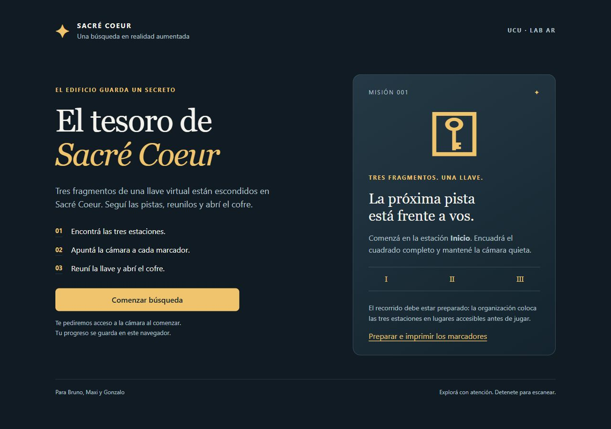

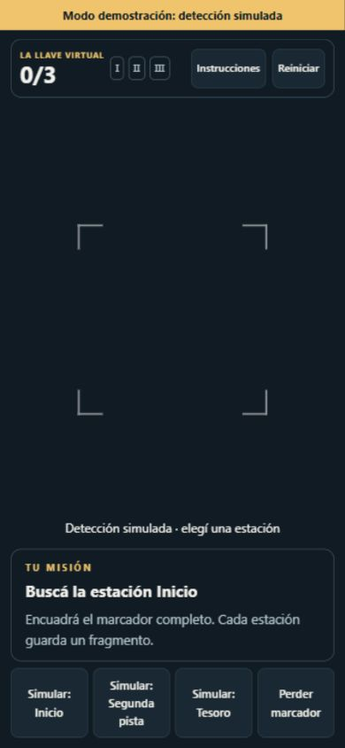
Detección simulada. El modo normal no tiene estos controles.

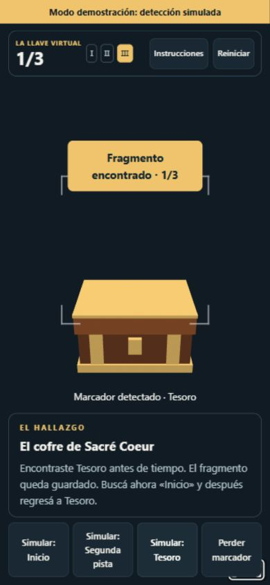

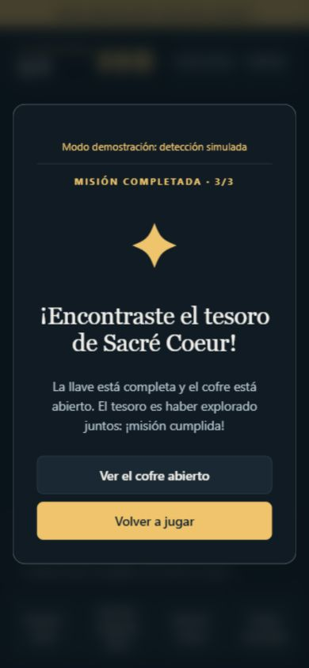

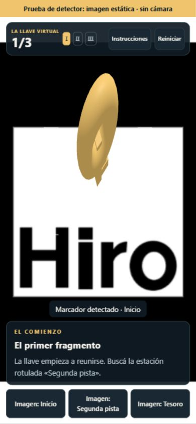
Patrón Hiro y fragmento de llave animado.

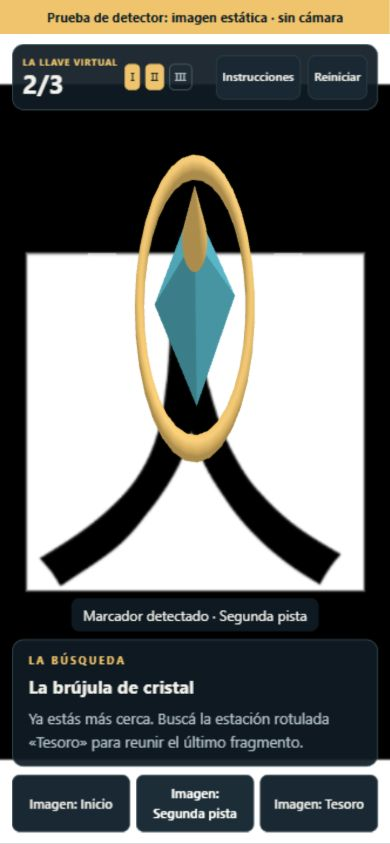
Patrón Kanji y cristal giratorio.

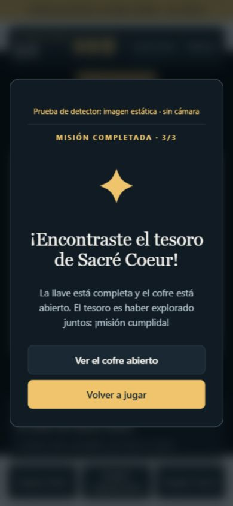

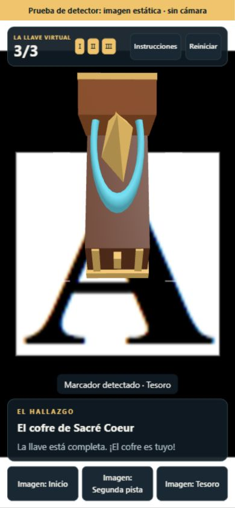
Patrón letra A, cofre abierto y recompensa.

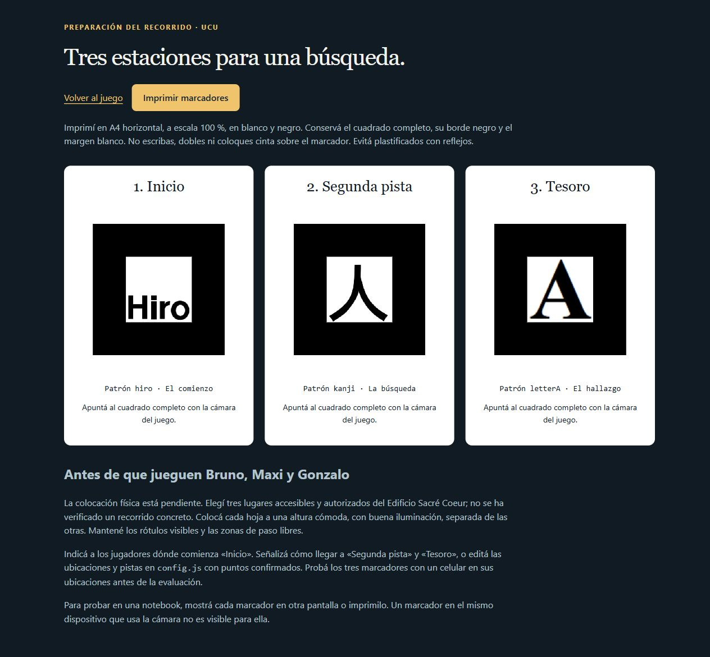

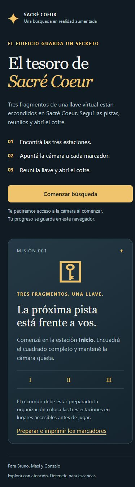

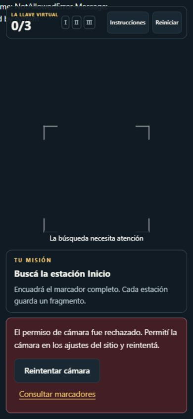
Se comprobó el mensaje de recuperación. No fue posible probar cámara física.

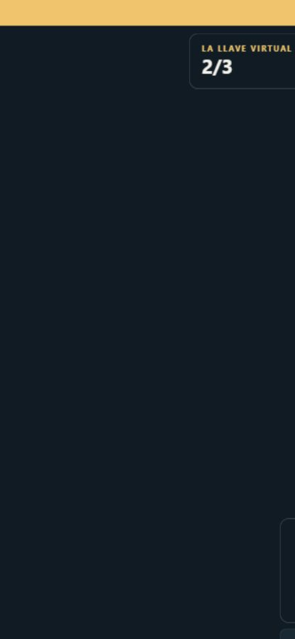

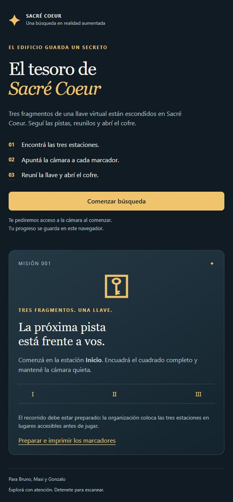

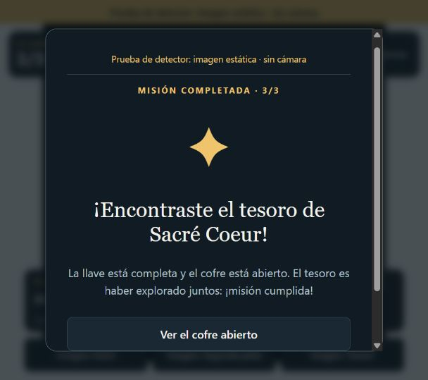